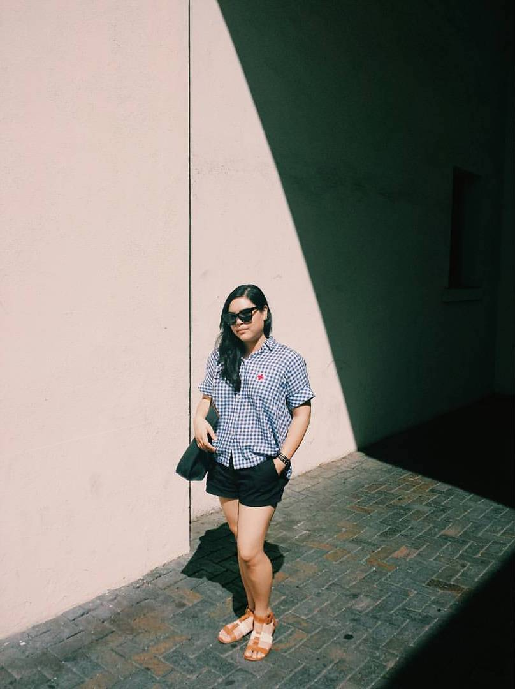

About Me

My name is Tracy Le. I am Vietnamese American born in Northern California. I currently live in San Diego and it's been four years living in this beautiful city!
I received my Bachelor's degree in Art History and minor in Business from Arizona State University. During my studies, I studied abroad in Lyon, France for a month and a half, and fell in love
with the food, the culture, and the arts. My passion for art grew during my high school years and I love learning about museum practices. In my free time I enjoy visiting different museums with my
friends and family, visiting La Jolla beach, and grabbing a latte at a local coffee shop.
Museums I recommend if you happen to visit in San Diego: